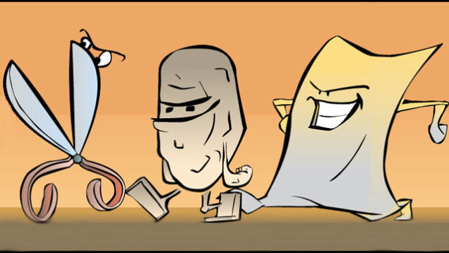

My Github
 The temperature-converter was something a created to print in color for different data types from a color based system calculations in variables.
The temperature-converter was something a created to print in color for different data types from a color based system calculations in variables.

This is my Rock Paper Scissors game that I coded to play against the computer. It is vary fun and you can play it for as long as you want.